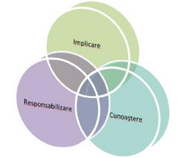
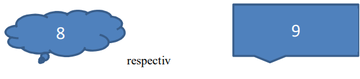

Porniţi aplicaţia pentru prezentări, deschideţi o nouă prezentare şi inseraţi în aceasta zece noi diapozitive.
Primul diapozitiv va fi de tip titlu şi va conţine titlul „Cursuri de formare” şi subtitlul „2022- 2023”.
Al doilea diapozitiv va fi de tip titlu şi text. Titlul – „Comunicare” va fi scris cu font Papyrus, culoare albastră, dimensiune 50. Textul va conţine:
-Tehnici de comunicare şi negociere
-Teoria comunicării
-Comunicare şi relaţii publice
Aplicaţi un efect de animaţie titlului şi marcatori, la alegere, cursurilor de mai sus
În diapozitivul trei inseraţi un tabel ce conţine numărul de cursanţi care au solicitat înscriere pentru fiecare dintre cele trei cursuri.
Folosind datele din diapozitivul precedent, adăugaţi în diapozitivul patru o diagramă de tip “linie”. Modificaţi culoarea graficului în verde.
Diapozitivul cinci va conţine o imagine potrivită cu titlul din diapozitivul 1. Aplicaţi o linie de contur de culoare verde, grosime 6 pct şi un efect de animaţie de intrare.
În diapozitivul şase inseraţi două butoane de acţiune. Primul face trecerea către diapozitivul 1, iar cel de-al doilea către ultimul diapozitiv.
Inseraţi în diapozitivul 10, folosind scrierea artistică, textul „Spor la lucru!”.
În diapozitivul şapte inseraţi o ilustraţie SmartArt după modelul celei de mai jos.

În diapozitivele 8 şi 9 inseraţi formele

Adăugaţi întregii prezentări ca design template un şablon ales de dvs. şi aplicaţi un efect de tranziţie întregii prezentări. Salvaţi fişierul cu numele Oferta de cursuri.